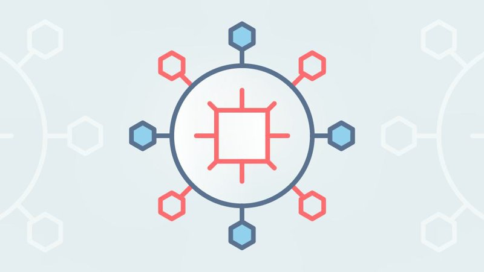

Prosit 3.2 Annuaire Active Directory
L'Annuaire Active Directory (AD) est un service de gestion des identités
et des accès utilisé principalement dans les environnements Windows.
Il permet de centraliser l'authentification des utilisateurs, la gestion
des ordinateurs du domaine et l'application des stratégies de groupe.
Consulter le CER
Prosit 2.2 Modélisation UML
Le Langage de Modélisation Unifié, de l'anglais Unified Modeling Language,
est un langage de modélisation graphique à base de pictogrammes conçu comme
une méthode normalisée de visualisation dans les domaines du développement
logiciel et en conception orientée objet.
Consulter le CER
Prosit 3.3 API et Webservice
Les API sont principalement axées sur la communication entre applications pour
l'accès aux fonctionnalités. L'EDI se concentre sur l'échange de documents
structurés entre partenaires commerciaux selon des formats normalisés.
Consulter le CER
Prosit 4.1 Développement avancé
Advance Web Development fait référence au processus de création de sites Web
dynamiques et interactifs qui vont au-delà des pages Web statique. Cela implique
l'utilisation de techniques et de technologies de codage avancées pour créer des
sites Web fonctionnels et visuellement attrayants.
Consulter le CER

Prosit 4.5 Architecture microservices
Une architecture de microservices est un type d'architecture d'application dans
laquelle l'application est développée sous la forme d'un ensemble de services.
Chaque service est indépendant, déployable séparément et communique avec les
autres via des interfaces légères.
Consulter le CER
Prosit 4.5 Architecture distrubée
L'architecture distribuée ou l'informatique distribuée désigne un système
d'information ou un réseau pour lequel l'ensemble des ressources disponibles
ne se trouvent pas au même endroit ni sur la même machine.
Consulter le CER